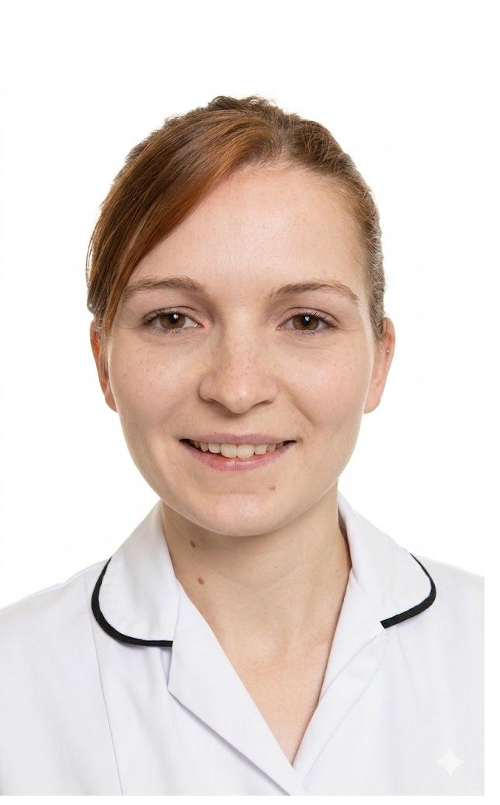

Your Physiotherapist
A neurological physiotherapist with over a decade of specialist clinical experience — and a genuine passion for helping people move better and live more independently.

Biography
BSc Physiotherapy · MSc Neurological Rehabilitation · MCSP · HCPC Registered
Chloe is a neurological physiotherapist with over ten years of clinical experience working with people across the full spectrum of neurological conditions. She trained initially in general physiotherapy before completing a Master's degree specialising in neurological rehabilitation — a field that she has dedicated her entire career to.
What sets Chloe apart is the combination of deep specialist knowledge and genuine warmth. She doesn't just understand the mechanics of neurological conditions — she understands how they affect people's confidence, independence, and daily life. Every class she runs reflects this.
Alongside her clinical work, Chloe trained as a Pilates instructor through the Australian Physiotherapy and Pilates Institute (APPI), the leading framework for physiotherapy-informed Pilates. She has also completed PD Warrior training — the internationally recognised high-intensity exercise programme for Parkinson's disease — bringing this evidence-based methodology to Norwich.
Chloe set up Norwich Neuro Physio & Pilates because she kept seeing the same gap: people finishing NHS physiotherapy with real progress, but no specialist community-based exercise to keep that progress going. The NHS does remarkable work, but ongoing weekly specialist support simply isn't available through that route. These classes exist to fill that gap.
Philosophy
Every new client has a one-to-one assessment before joining a group class. Chloe takes the time to understand your history, your goals and your current movement. Nothing is assumed.
Every exercise in every class has a reason rooted in clinical research. Chloe draws on the same neurological rehabilitation principles that guide NHS specialist practice — not general fitness trends.
Even within a small group, Chloe adapts exercises to each participant. Good days and bad days are expected and accommodated. The goal is always your progress, at your pace.
Groups are small by design. The connection between participants — people who genuinely understand each other's experience — is itself therapeutic. Chloe nurtures this as much as the exercise.
The aim isn't a short course of classes. It's building habits, strength and confidence that last. Chloe supports participants to take ownership of their exercise between sessions too.
Neurological conditions vary enormously day-to-day. Chloe's clinical training means she spots early signs of fatigue, overexertion or change — and responds appropriately every time.
Qualifications & Training
Undergraduate degree in physiotherapy from a leading UK university. Foundation in anatomy, physiology and clinical practice across all physiotherapy specialisms.
Postgraduate Master's degree specialising in neurological rehabilitation — the clinical science underpinning all of Chloe's class design and assessment practice.
Internationally recognised high-intensity exercise programme for Parkinson's disease. The gold standard in Parkinson's-specific movement therapy, with strong evidence of effectiveness.
Australian Physiotherapy and Pilates Institute method — the leading physiotherapy-informed Pilates framework, taught across 10 countries to over 20,000 allied health professionals.
Fully regulated by the Health and Care Professions Council (HCPC) and a chartered member of the Chartered Society of Physiotherapy (CSP) — the professional and regulatory standards for UK physiotherapists.
Continuous professional development in neurological rehabilitation, balance science and exercise medicine. Chloe stays current with the latest research to bring it into every session.